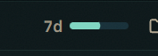

Today the meter is two bare bars, "5h" and "7d". To learn the percentage, when it resets or whether you're on pace to run out, you have to hover. The forecast already exists (outlook.pace), but all it does is turn the bar amber without saying why.
Each concept below sits in a stand-in subbar at the panel's full width and at its narrow 460 px width. Use the switch to try three readings: a calm afternoon, a 5-hour window that will fill before it resets, and a week that's nearly gone.

Today: 7d and a bar, nothing else.